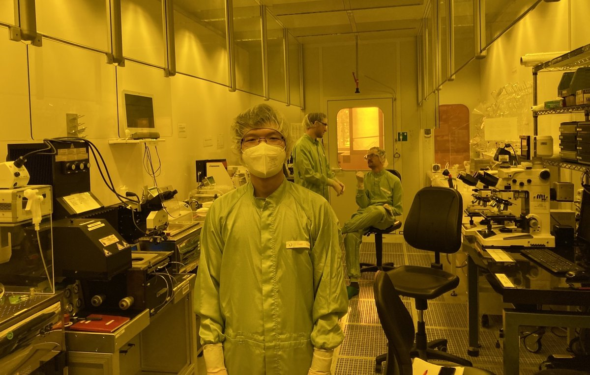
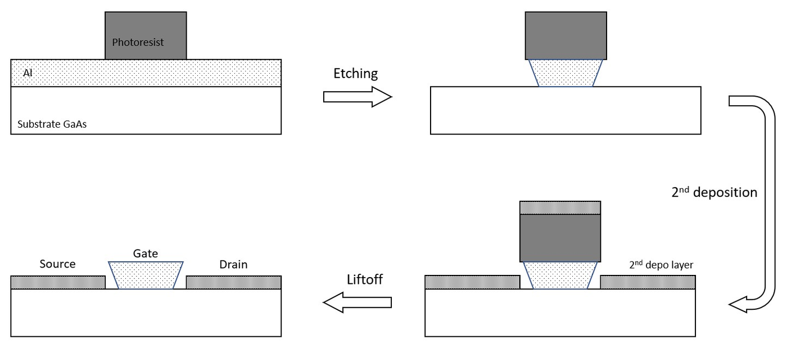
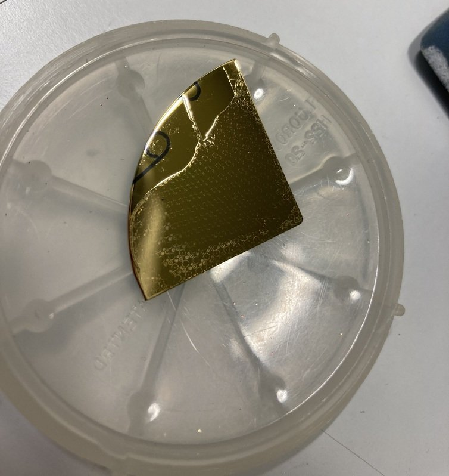
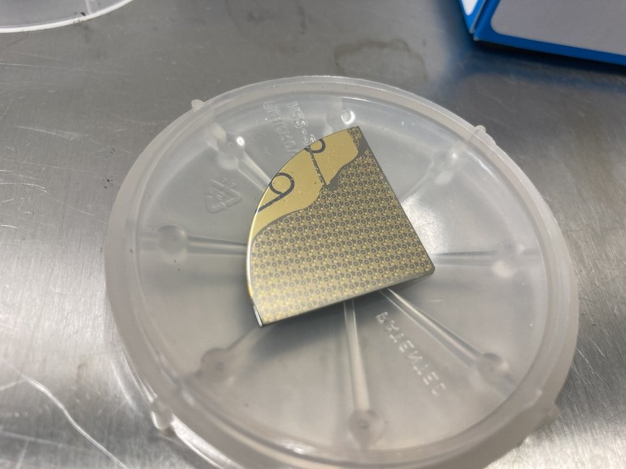
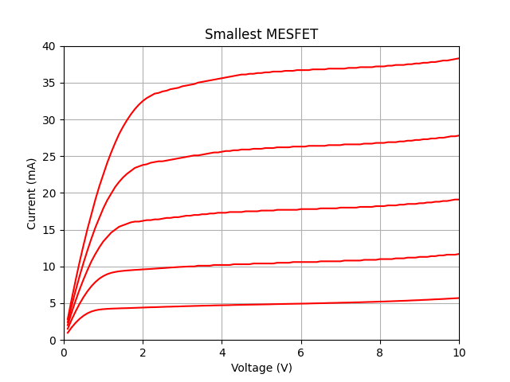
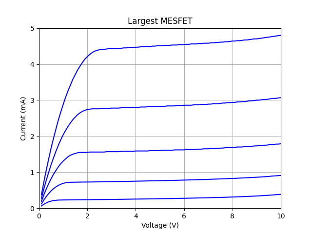
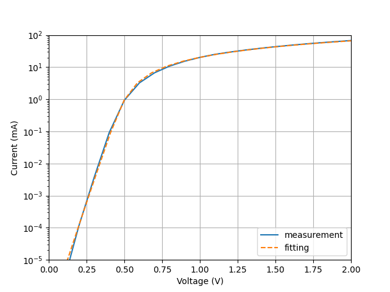
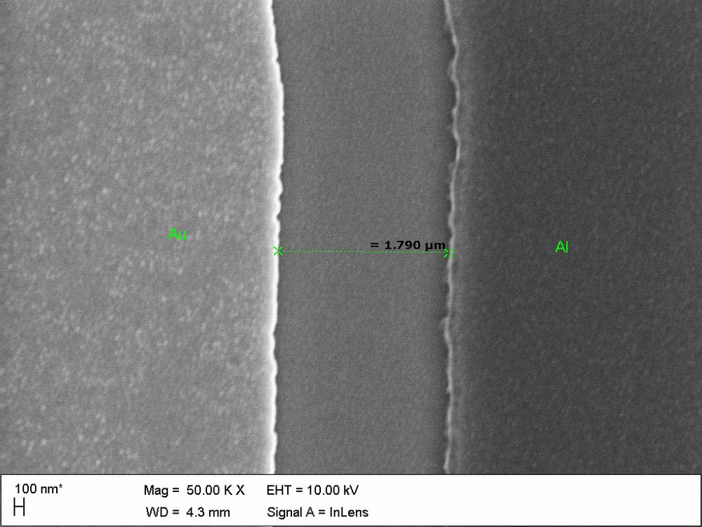

Corbino MESFET fabrication on GaAs
In a clean-room lab course at Ulm University, I fabricated transistors by hand on gallium arsenide, from cleaving the wafer to measuring the finished devices, and then worked out why most of them failed.
- Context
- Lab course Semiconductor Technology, Institute of Functional Nanosystems, Ulm University
- Year
- 2022
- Device
- Corbino MESFET on GaAs, four device sizes
- Facility
- Ulm University clean room, ISO 4 working area
- Process
- E-beam evaporation, photolithography, wet etching, lift-off, annealing
- Measurement
- Wafer probe station, Keithley SMU, curve fitting in Python

Overview
A MESFET is a field-effect transistor whose gate is a metal-semiconductor (Schottky) contact. The lab used a Corbino layout: the source is a small disk, the gate a ring around it, and the drain a second ring around that. Every step was done manually, so each one had to be understood rather than just run.
The goal was a working device on each participant’s quarter of a 2-inch GaAs wafer, plus a measurement report: diode and transistor characteristics, and a fit of the diode parameters.
The wafers arrived with the channel already grown by molecular beam epitaxy: a 50 nm silicon-doped n-type GaAs layer (about 1017 cm−3), thin enough that the channel pinches off at a moderate gate voltage. The devices are depletion-mode transistors, which conduct at zero gate voltage and are switched off by a negative one.
Setting and safety
The course took place in the Ulm University clean room, built in the early 1990s and opened in 1993. Its working area is kept at ISO 4 air cleanliness with a constant downward airflow, and the lithography room uses yellow light so the photoresist is not exposed. Everyone worked in overalls, hair covers and gloves, always with a supervisor present.
Gallium arsenide is classed as a carcinogen, so pieces and dust stayed on the work surface or in closed containers and went into dedicated waste. Acids and solvents were handled on ventilated wet benches with a face shield and gloves, and every beaker was labelled with its contents.
Fabrication
-
Prepare the sample
Cleave the 2-inch wafer into quarters along its crystal planes, then strip the native oxide in a H₃PO₄ : H₂O₂ : H₂O etch (3 : 1 : 25) for 20 seconds.
-
Deposit aluminum
Evaporate aluminum with an electron beam at about 10⁻⁷ mbar, with a spinning sample holder for an even layer and a quartz-crystal sensor tracking the thickness.
-
Pattern the resist
Spin-coat AZ 5214 E positive resist (4000 rpm, 60 s, 1.5 µm), bake at 100 °C, expose through the Corbino mask for 14 seconds, and develop in 726 MIF.
-
Etch the aluminum
Etch in phosphoric acid heated to about 150 °C for roughly three minutes. The slight sideways etching under the resist is what opens the gaps that separate gate from source and drain.
-
Deposit the contact metals
Evaporate a four-layer stack of 70 nm germanium, 50 nm gold, 10 nm nickel and 50 nm gold for the source and drain contacts.
-
Lift off
Dissolve the remaining resist in warm acetone with an ultrasonic bath, so that the metal on top of it flakes away and only the contacts in the gaps stay.
-
Anneal
Heat to 400 °C in nitrogen (one hour up, two hours hold, one hour down). At this temperature germanium sits on arsenic sites and acts as a donor, which improves the source and drain contacts. Arsenic starts to gas out of GaAs at around 350 °C, which is why this step runs in a closed, ventilated setup.



Measurement and analysis
I measured DC characteristics on a wafer probe station, contacting each device with microprobes and driving it with a Keithley source-measure unit controlled from KITE. Two measurements were taken: the diode curve of the gate contact and the transistor output curves.
Transistor output curves
The curves show the expected depletion-mode behavior. Current rises, saturates, and drops as the gate voltage steps negatively from 0 V to −2 V. At the same bias the smallest device carried roughly 38 mA against about 5 mA for the largest, in line with the drain current depending inversely on gate length.


Fitting the diode
To extract the saturation current I₀, the ideality factor n and the series resistance RS, I rearranged the diode equation so that voltage is a function of current and fitted its derivative dV/dI, which isolates RS first and leaves two parameters to tune. The fit follows the measurement closely over the whole range.

| Parameter | Largest device | Smallest device |
|---|---|---|
| n | 1.3 | 1.21 |
| RS | 4 Ω | 0.2 Ω |
| I₀ | 23.5 nA | 21 nA |
Why most devices failed
Only one of the four quarter wafers produced working transistors, so the output curves above come from that sample, which all four participants shared. On the others, many devices behaved like plain resistors instead of diodes, and none behaved as transistors.
The likely cause was an electrical short between the gate and the source and drain. The gap that separates them depends on how far the aluminum is over-etched and on how long the resist is developed, since long development deepens the undercut beneath the resist. Both steps were hard to control by hand. Atomic force microscope images backed this up: the working sample showed a clean gap of about 1.8 µm, while the others had touching contacts or gaps below 0.5 µm.

What I took away
- A small deviation in one step can cost a whole batch of devices, so timing and process control matter more than any single clever step.
- Hands-on experience with clean-room processing: wet etching, spin-coating, contact lithography, evaporation, lift-off and annealing.
- Characterizing devices end to end, from probing to fitting a physical model in Python and tying a failure back to the physical cause.
- Working safely with hazardous materials such as GaAs, acids and solvents under strict clean-room rules.